Datado de 1896, o registro fotográfico de Flávio de Barros denuncia as condições de vida no interior do país. Na foto, mulheres, crianças e idosos que viveram no Arraial de Canudos sendo presos pelas forças militares.
Flávio de Barros. In: Bia Corrêa do Lago. Os fotógrafos do Império: a fotografia brasileira no Século XIX. Rio de Janeiro: Capivara, 2005.
Muito já se discutiu a respeito do mito da cordialidade do povo brasileiro. Seja pelas expressões românticas da literatura ou mesmo pelas letras de canções, diz-se que o brasileiro é um povo amigável e pacífico. Mas uma leitura atenta da história do país é capaz de desmistificar essas interpretações.
Como temos estudado ao longo da coleção, desde as repressões brutais aos movimentos sediciosos regenciais, até as chamadas “Jornadas de Junho” de 2013, muitas vezes o Estado brasileiro valeu-se do uso da força militar e policial contra a própria população civil. Neste capítulo, vamos analisar como a prosperidade da economia cafeeira não esteve ao alcance de toda a sociedade brasileira.
Assim, vamos compreender como, apesar do grande crescimento econômico, diversos setores da sociedade demonstraram forte consciência social tanto para criticar os abusos políticos quanto para exigir seus direitos, fossem eles civis, políticos ou sociais, ainda que, muitas vezes, o Estado tenha utilizado métodos violentos para reprimir os movimentos sociais.
- Quais são as relações entre os direitos civis, políticos e sociais em nossa história?
- Como a repressão violenta do Estado afeta a democracia?
- Atualmente, qual é a relevância dos movimentos sociais? E como eles podem contribuir para a consolidação democrática em nosso país?
Neste capítulo serão abordadas as habilidades EM13CHS401 , EM13CHS402 , EM13CHS501 .
Dinâmicas sociais da Primeira República
Alguns números podem nos dar uma ideia das transformações ocorridas na sociedade brasileira ao longo de sua Primeira República. Em termos populacionais, o Brasil passou de 14,3 milhões de pessoas, em 1890, para cerca de 31 milhões, em 1920, um crescimento de 113%. De acordo com o Censo Demográfico de 1940, a população brasileira chegou a 41 milhões de pessoas, um crescimento de 36% em um intervalo de 20 anos.
Em 1890, a proporção de pessoas que viviam nas dez maiores cidades do país era de 7,4% da população total; em 1920, passou para 10% e, em 1940, estava perto dos 11%. A proporção entre os números de operários e os de trabalhadores rurais era: em 1900, 6,4% do número de trabalhadores rurais; em 1920, essa proporção dobrou, chegando a 12,8%. Portanto, é possível concluir que o país assistiu a um crescimento significativo do número de habitantes em grandes cidades.
O crescimento econômico e industrial também pode ser mensurado pelas estatísticas produzidas na época. O Censo de 1907 listou 3 250 fábricas no país, em 1912, eram 9 400 e, em 1920, já eram 13,3 mil. O número de empresas privadas mais que quadriplicou em cerca de dez anos. Esses dados colocam em perspectiva o crescimento social e econômico do país e demonstram como a Primeira República assistiu a um período de grande desenvolvimento em comparação com a sociedade imperial.
Além das questões econômicas, é preciso levar em consideração aspectos como as disparidades regionais, a manutenção do voto descoberto e as fraudes eleitorais associadas a ele, assim como dados relativos à alfabetização, visto que, em 1890, apenas 17,4% da população brasileira era alfabetizada. Em 1920, esse dígito subiu para 28,8% e alcançou cerca de 40% em 1940. Em suma, em termos absolutos, o número de pessoas alfabetizadas passou de 2,4 milhões em 1890 para 16 milhões em 1940.
Assim, ao mesmo tempo que a economia cafeeira colocou o Brasil entre as nações que mais cresceram no mundo no começo do século XX, setores da sociedade brasileira foram marcados pelo chamado “voto de cabresto”. Essa sociedade também viu surgir revoltas, rebeliões e movimentos de setores sociais insatisfeitos com determinados aspectos do seu tempo.
Canudos (1897)
Para compreender a história de Canudos, precisamos retornar a 1890, ano em que o líder Antônio Maciel já arrebanhava cerca de 80 mil seguidores pelo sertão baiano. Ele havia exercido várias profissões quando passou a se dedicar às peregrinações em meio a um cenário de desolação social e econômica, alimentado pela crise dos antigos engenhos açucareiros, associada a terríveis períodos de secas, como a de 1878, na qual se estima ter morrido mais de 100 mil pessoas pela região.
Em meio à miséria e ao abandono da região pelos órgãos públicos, Antônio Conselheiro – como passou a ser chamado, por causa de suas pregações – se instalou, com seus seguidores, na fazenda abandonada de Belo Monte, no arraial de Canudos, na Bahia. Seu projeto social estava associado também a aspectos religiosos: crítico das reformas laicas trazidas pela República, Conselheiro valia-se do seu carisma pessoal para defender uma espécie de utopia cristã, um reino de paz e prosperidade para seus seguidores.
O apelo messiânico que prometia bem-estar e abundância foi capaz de levantar mais de 5 mil casas que abrigaram cerca de 20 mil famílias dedicadas à produção coletiva. Com o tempo, as notícias a respeito do Arraial de Canudos informavam sobre uma sociedade alternativa às condições republicanas, na qual a ideia de propriedade e riqueza estava associada, sobretudo, às demandas coletivas. Para efeito de comparação, no momento em que Canudos atingia uma população de 50 mil pessoas, a cidade mais próxima, Juazeiro, tinha cerca de 5 mil à época; já a capital mais próxima, Salvador, 20 mil.
O estopim para os conflitos entre os sertanejos e caboclos conselheiristas e as tropas republicanas foi uma remessa de madeira encomendada por Antônio Conselheiro que não havia sido entregue. Diante dos rumores de que os sertanejos iriam até Juazeiro buscar a encomenda pela força, as elites locais reclamaram apoio militar e se precipitaram em direção ao arraial. No meio do caminho, foram tomados por uma emboscada: o episódio provocou mortes de ambos os lados, sendo 105 sertanejos e 10 republicanos.
Os eventos seguintes foram mais sangrentos e já traziam a marca de uma guerra civil ao conflito. Entre agosto de 1896 e janeiro de 1897, houve uma série de investidas oficiais contra Canudos, todas fracassadas, ocasionando a morte de mais de 600 soldados.
Visto como moderador demais pelos setores conservadores, o governo de Prudente de Morais (1894-1898) optou por uma medida mais radical e, para tentar dar cabo de Canudos, contratou o coronel Moreira César, conhecido na época como “Treme-Terra” pela truculência em suas ações militares contra a Revolta da Armada (1893-1894) e a Revolução Federalista (1893-1895).
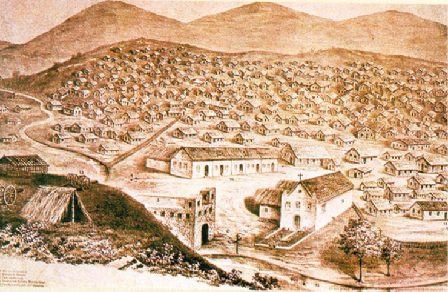De autoria desconhecida, reconstituição do Arraial de Canudos.
The History Collection/Alamy/Fotoarena
Em março de 1897, o coronel partiu para o arraial contando com cerca de 1500 soldados armados de canhões alemães Krupp, tecnologia de última geração. Entretanto, a tradicional mobilização militar do coronel não foi capaz de fazer frente aos sertanejos de Canudos, que seguiam resistindo bravamente.
No segundo semestre do mesmo ano, o comando das tropas oficiais foi dado para o marechal Machado Bittencourt, que levava duas novidades: um grupo de jornalistas e fotógrafos dedicados a relatar a fascinante resistência de Canudos e um canhão inglês que disparava projéteis de cerca de 15 kg. Conhecido como “A Matadeira”, o canhão precisou somente de um tiro para pôr fim ao arraial. Após quase uma década de liderança social e dois anos de guerra civil, Canudos chegava ao fim, com a sua completa destruição e um saldo de mais de 25 mil mortos.
Entre os jornalistas que acompanharam os eventos, estava Euclides da Cunha. Em viagem oficial pelo jornal O Estado de São Paulo , ele relatava em crônicas o cotidiano das campanhas militares e foi o primeiro a reconhecer que Antônio Conselheiro não era o fanático messiânico pintado em cores fortes pelas lendas populares. Impressionado com os impactos da guerra civil, fez de seu livro, Os sertões , uma forma de denúncia das arbitrariedades do governo federal contra a população civil.
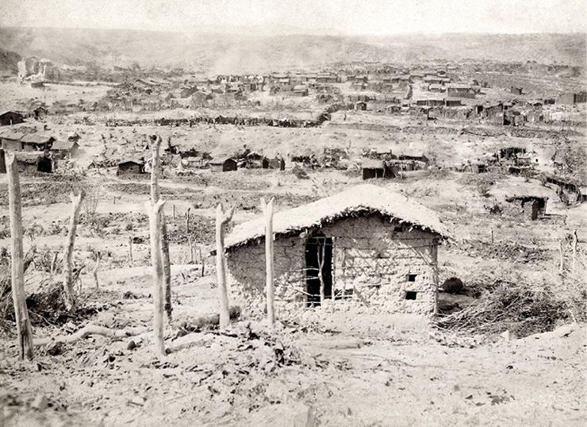Flávio de Barros, fotografia das ruínas do arraial de Canudos, 1897.
Flávio de Barros/Museu da República, Rio de Janeiro
Padre Cícero, Lampião e Maria Bonita (1920-1930)
O sertão ainda foi cenário de outras personagens decisivas para a história brasileira, como Padre Cícero. Nascido em 24 de março de 1844 em Crato, Cícero Romão Batista ingressou na vida religiosa e se dedicou ao ensino das Letras em sua cidade. Por volta dos 28 anos, ele foi convidado a visitar Juazeiro, então distrito de Crato, onde celebrou a tradicional Missa do Galo.
Ali passou a se dedicar ao trabalho pastoral e à moralização da vida comunitária, auxiliando os mais necessitados e promovendo ações filantrópicas que reforçaram sua liderança regional. Em 1898, os relatos de ações milagrosas colocaram a biografia de Padre Cícero em confronto direto com a hierarquia da Igreja Católica, que o expulsou de sua ordenação religiosa. Diante disso, acabou se dedicando à vida política, chegando a ser prefeito de Juazeiro do Norte por 12 anos e deputado federal pelo Ceará em 1926. Faleceu aos 90 anos em 1934.
“Padim Ciço”, como ficou conhecido, foi o maior benfeitor da sua região, para onde levou ordens religiosas, escolas, infraestrutura urbana, entre outras ações. Sua figura tornou-se símbolo de fé e devoção que ainda hoje mobiliza fiéis.
Virgulino Ferreira da Silva, o Lampião , nasceu no sertão pernambucano em junho de 1898 e, aos 16 anos, já tinha fama de cangaceiro. Depois da aposentadoria do líder sertanejo Sinhô Pereira, apadrinhado de Padre Cícero, Virgulino assumiu o comando do bando e se autointitulou Lampião – aquele cujo fuzil sempre brilha. Maria Gomes de Oliveira, apelidada por Lampião de Maria Bonita , foi a primeira mulher do bando, juntando-se ao grupo em 1930, por vontade própria após conhecer Lampião.
A partir da década de 1920, Lampião e seu bando arrebataram o interior de Sergipe, Bahia, Paraíba e Rio Grande do Norte e mantiveram suas atividades até o ano de 1938, quando as chamadas volantes, grupos armados compostos de oficiais de carreira e matadores locais, executaram Lampião, Maria Bonita e outros 40 cangaceiros no interior de Alagoas. Morto o casal, o ideal romântico de cumplicidade e de justiça social ainda permeia o mito de Lampião e Maria Bonita no interior do país.
As práticas sociais de Lampião e seu bando já foram chamadas de “banditismo social” pelo historiador inglês Eric Hobsbawm, algo que pode ser compreendido como uma forma de subversão das leis oficiais em busca de proteção aos marginalizados. De acordo com essa visão, saques, roubos e sequestros de animais eram atividades praticadas pelos cangaceiros contra a ordem estabelecida, tendo em vista a satisfação de serviços prestados ou mesmo a das próprias necessidades dos grupos de marginalizados.
No entanto, há historiadores que relativizam esse conceito, pois afirmam que ele tende a romantizar as condições do cangaço ao considerá-lo, necessariamente, como uma ação benevolente ou solidária. Nesse sentido, os críticos do conceito consideram que o termo é uma construção teórica de setores urbanos. Destacam ainda que seria preciso considerar as particularidades de cada região para que se possa compreender as relações de poder entre coronéis, cangaceiros e trabalhadores rurais.
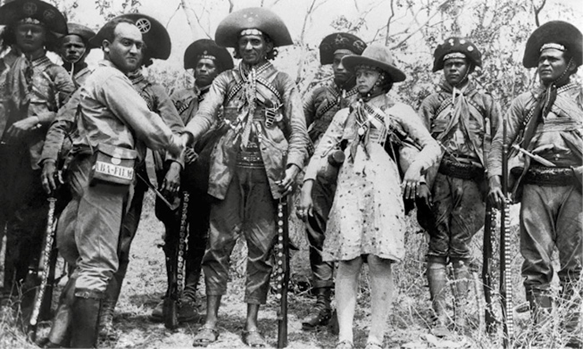Fotografia de 1936. Benjamin Abrahão foi um fotógrafo que ficou conhecido por obter licença do próprio Lampião para acompanhar seu grupo cangaceiro pelo sertão nordestino. Abrahão está à esquerda da foto, na frente, cumprimentando Lampião. Maria Bonita está ao lado de seu companheiro, à direita.
Benjamin Abrahão Botto
Revolta da Vacina (1904)
O prefeito do Rio de Janeiro, Francisco Pereira Passos, nomeado em 1902 pelo então presidente da República Rodrigues Alves (1902-1906), encampou a ideia de remodelar a capital carioca de acordo com padrões europeus. A proposta era levar a cabo algo semelhante ao que o Barão de Haussmann havia feito na cidade de Paris: destruir antigos casarões, abrir ruas e avenidas largas, projetar parques e bulevares, capazes de abrigar manobras militares com agilidade para evitar submissões populares, como as que haviam ocorrido em 1848.
Para tanto, colocou em prática um verdadeiro processo de demolição de cortiços e prédios de feições coloniais e imperiais – mais de dois mil prédios foram destruídos. Porém, essa modernização urbana afetou diretamente a população mais carente que, repentinamente, se viu despejada e marginalizada para as periferias geográficas da capital carioca.
... a Literatura brasileira da época expressou bem as contradições sociais desse momento. Uma das obras, inclusas nesse contexto, foi O cortiço , de Aluísio Azevedo. Escrito em 1890, o romance explora os dramas humanos pelo viés naturalista, retratando a vida nos cortiços cariocas numa realidade antecedente à Revolta da Vacina.
A Revolta da Vacina, de Nicolau Sevcenko.
Descendente de ucranianos, Nicolau Sevcenko foi um importante historiador brasileiro que lecionou na Universidade de São Paulo e em outros centros internacionais, como a Universidade Harvard e o King’s College, da Universidade de Londres. Entre seus temas de estudos, estava a Revolta da Vacina, analisada em um livro clássico sobre suas causas e desdobramentos.
Além da face urbanística e estética do projeto, estavam também os propósitos higienistas, que defendiam melhores condições de limpeza e de saneamento da metrópole. No Rio de Janeiro, esse movimento ganhou impulso devido ao longo histórico de presença de insetos e ratos, além do ar fétido, motivos pelos quais epidemias como febre amarela, peste bubônica e varíola eram recorrentes no cotidiano da cidade.
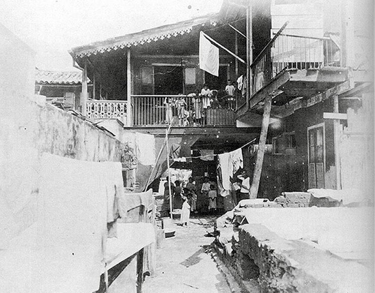Barracão de madeira na rua da Sé, centro do Rio de Janeiro, em 1906. Cortiços como esse eram abundantes no centro da cidade e foram destruídos pelo projeto de “Regeneração” imposto por Pereira Passos.
Augusto Malta/Arquivo Geral da Cidade do Rio de Janeiro
Para atender a essa demanda higienista, o governo federal contratou o médico sanitarista Oswaldo Cruz, de experiência e reputação internacionais. Foi dele a proposta da obrigatoriedade da vacinação contra a varíola. O tema causou bastante alvoroço na opinião pública.
O governo foi adiante, abriu postos de compras de ratos e montou brigadas antimosquito que invadiam casas em favelas e morros aplicando a vacinação à força, sem fornecer qualquer tipo de informação sobre seus efeitos à população. A preocupação governamental era respaldada pelas elites agroexportadoras, que não queriam que as epidemias comprometessem seus negócios – fosse evitando a chegada de mão de obra imigrante ou prejudicando o funcionamento dos portos.
No ano de 1904, entre outubro – data da obrigatoriedade da vacinação – e novembro – data de sua revogação –, teve início a Revolta da Vacina . A capital carioca assistiu a conflitos armados entre civis e policiais, e muita resistência popular contra a vacinação. Atualmente, essa revolta é considerada o maior levante popular da história da cidade do Rio de Janeiro, sendo conhecida também como “Quebra-Lampiões”, pois, em seu decorrer, bondes elétricos e milhares de lampiões de iluminação pública foram destruídos.
Vale reforçar que a desinformação sobre os benefícios da vacinação não foi a única causa da revolta popular. Ao contrário, foi um elemento menor dentro de um contexto de carestia, desemprego, recessão econômica e, claro, truculência das autoridades governamentais na condução da vacinação. Portanto, hoje em dia, a revolta é lida dentro de um quadro social mais amplo: que demonstra como, muitas vezes, o Estado brasileiro deixa de representar setores da sociedade civil e passa a atuar frontalmente contra eles.
Revolta da Chibata (1910)
Em 22 de novembro de 1910, a capital carioca assistiu a mais um conflito entre as Forças Armadas do país. O viés monarquista da Marinha, conhecida na época como Armada, insistia em manter certos vícios da escravidão, tais como os maus-tratos físicos contra seus marinheiros: os comportamentos considerados irregulares eram punidos, em média, com 25 chibatadas, além de outros castigos físicos, como a palmatória.
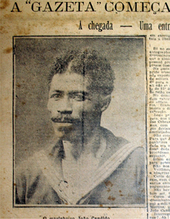A capa da Gazeta de notícias , de 31 de dezembro de 1912, estampando a foto de João Cândido, que ficou conhecido como “Almirante Negro”.
Jornal Gazeta de Notícias
No dia 16 de novembro de 1910, o marinheiro Marcelino Menezes foi delatado por colegas por quebra de decoro e o seu comandante ordenou uma punição pública desumana: 250 chibatadas. A cena provocou revolta e, no dia 22 de novembro, houve um motim que causou a morte do comandante e a tomada dos navios pelos próprios marinheiros.
Dentre os amotinados, destacou-se João Cândido, um marinheiro negro em atividade há 15 anos e que foi chamado pela imprensa da época de Almirante Negro. Exímio profissional, arrebatou a atenção dos jornalistas internacionais da época, fascinados com as evoluções militares dos navios que foram posicionados contra a capital exigindo o fim dos maus-tratos físicos na corporação.
Diante das ameaças, o governo atendeu às demandas e prometeu anistia aos revoltosos. Porém, uma vez desembarcados, dezenas deles foram presos e enviados para uma prisão na Ilha das Cobras. Detidos por mais de três dias, 16 deles morreram sufocados pela combinação da maresia com o caiado da pintura da cela. O sobrevivente João Cândido foi internado no Hospital dos Alienados, diagnosticado como insano por afirmar ouvir as vozes e os gritos dos colegas de sala. Ele sobreviveu como pescador até os 89 anos de idade, vindo a falecer em 1969.
Contestado (1912-1916)
Também conhecida como “A guerra dos pelados”, os eventos ligados à Guerra do Contestado guardam muitas semelhanças com a guerra civil de Canudos. O conflito envolveu a disputa de um território de cerca de 25 mil quilômetros quadrados, localizado entre as fronteiras oeste de Santa Catarina e Paraná, vizinhas à Argentina. A região em questão era composta de matas virgens de araucária e erva-mate, ambas riquezas naturais de grande valor no mercado capitalista que se abria no Brasil.
O território foi vendido pelo governo brasileiro para Percival Farquhar, um magnata estadunidense com investimentos em todo mundo. Ele foi o responsável pela construção da ferrovia Madeira-Mamoré, na Região Norte do Brasil.
Entre seus propósitos no Sul do país, estava a abertura de uma nova linha ferroviária ligando o estado do Rio Grande do Sul ao Rio de Janeiro, a Brazil Railway Company. Essa linha transportaria mercadorias pelo interior do Brasil e ligaria os países platinos aos portos da capital carioca. Para tanto, foram concedidas faixas de 15 quilômetros de cada lado da linha ferroviária para exploração comercial. Porém, uma questão social estava em jogo: a região era habitada havia décadas por milhares de famílias sertanejas dedicadas à economia de subsistência.
A empreitada ficou por conta da sua própria empresa, a Southern Brazil Lumber & Colonization Company, que mobilizou mão de obra técnica e operária no exterior e formou um batalhão de oito mil funcionários dedicados à abertura dos primeiros 300 quilômetros na primeira década do século XX. As terras da população foram desapropriadas pelo governo em benefício da construção da ferrovia, e várias pessoas perderam o emprego.
Diante disso, muitas das famílias sertanejas encontravam apoio nas palavras de Miguel Lucena, conhecido como José Maria, líder carismático que advogava valores monarquistas e messiânicos em suas pregações populares pela região. José Maria, em conjunto com essa massa de desabrigados, fundou uma comunidade que vivia da agricultura de subsistência. Sua liderança cada vez mais popular era vista com maus olhos pelas elites locais e, principalmente, pelas tropas oficiais, que tomaram a dianteira no combate aos vilarejos dos miseráveis.
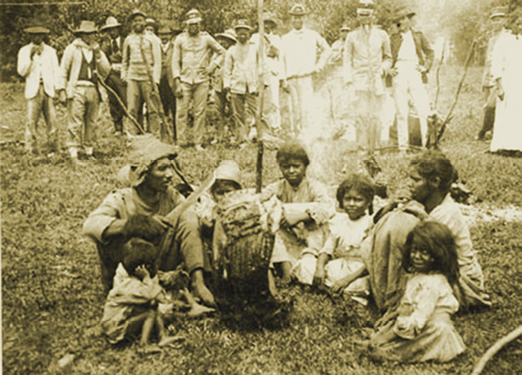Grupo de sertanejos rendidos pelas tropas federalistas durante a Guerra do Contestado. Tal como Canudos, o evento opôs as forças militares do Estado contra setores populares miseráveis que lutavam por condições básicas de vida. Fotografia de 1915.
Claro Jansson/Coleção particular
A Guerra do Contestado foi caracterizada por avanços tecnológicos bélicos importantes utilizados contra os revoltosos. Valendo-se de armas de fogo, treinamentos táticos e aviões para reconhecimento territorial, as tropas oficiais começaram a abrir fogo contra os populares em setembro de 1914. Mais uma vez, o Estado brasileiro voltava-se contra a população brasileira. A resistência popular aos avanços das tropas do governo foi tamanha que a guerra se estendeu até agosto de 1916. Na medida em que capturava aqueles tidos como revoltosos, os republicanos raspavam-lhe as cabeças – daí a alusão à “guerra dos pelados contra os peludos”. Em seu auge, o conflito opôs cerca de 20 mil caboclos contra 9 mil soldados. Ao fim, estima-se que a vitória das tropas republicanas – e, por extensão, do caráter agressivo das forças capitalistas – tenha custado a vida de, aproximadamente, 15 mil civis.
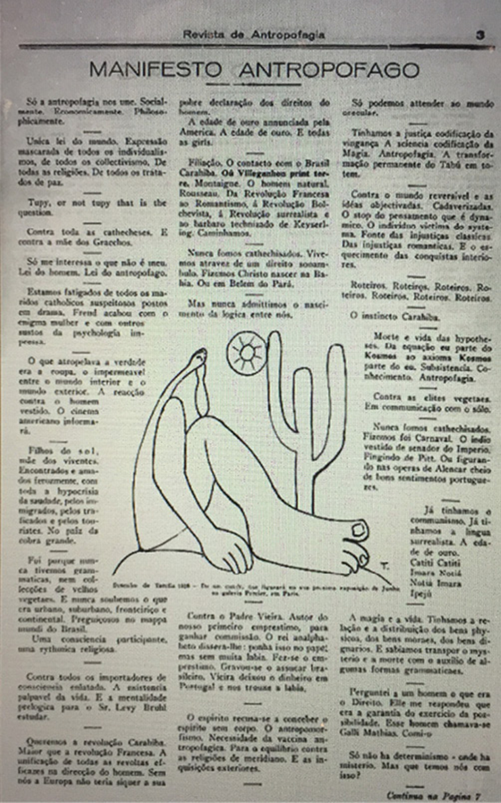Publicado na Revista de Antropofagia em maio de 1928, o manifesto modernista foi escrito em estilo provocativo para os padrões de época.
Mrwildeson (CC BY-SA 4.0)
Semana de 1922 e o Modernismo
Intelectuais e artistas antenados nas vanguardas estéticas europeias também estavam descontentes com a Primeiro República. Entre suas críticas, estava a de que a identidade nacional brasileira havia sido criada pelo Império brasileiro de acordo com valores românticos do século XIX.
Entre 11 e 18 de fevereiro de 1922, ocorreu a Semana de Arte Moderna no Teatro Municipal de São Paulo. Promovida por nomes como Oswald de Andrade, Mário de Andrade, Di Cavalcanti, Anita Malfatti, Heitor Villa-Lobos, Victor Brecheret, Menotti Del Picchia, e muitos outros, o evento inaugurou toda uma geração de intelectuais e artistas que propunham rupturas com as linguagens estabelecidas pelo IHGB imperial.
A Semana de Arte Moderna promoveu ataques frontais ao europeísmo da cultura brasileira, à importação de padrões literários e à conformação da identidade brasileira a uma suposta distinção entre alta cultura e baixa cultura. E, na medida em que os anos se passavam, as ações intelectuais em mostras artísticas, em lançamentos de livros e nas atuações pela imprensa escrita foram reverberando as contribuições vanguardistas dos modernistas.
Em 1928, Oswald de Andrade publicou o Manifesto antropofágico que assumia o caráter “antropofágico” da cultura brasileira. O manifesto propunha uma leitura plural, rica e mestiça do caldo cultural brasileiro, considerando a miscigenação um fator de síntese da diversidade brasileira.
Com frases como “só me interessa o que não é meu ” e “tupi or not tupi , that’s the question” , o manifesto assumia um elemento comum de certos povos originários brasileiros – a antropofagia – como um fator estético, um fundamento da linguagem por meio da qual eles reinventariam a identidade nacional brasileira.
Dessa maneira, a ideia era “deglutir, mastigar, absorver” elementos culturais estrangeiros, a fim de propor uma cultura brasileira aberta e propícia ao futuro. As línguas faladas pelo interior do país e os traços culturais africanos e ameríndios passaram a ser absorvidos pelas obras do modernismo, em uma postura que propunha uma ruptura com as perspectivas eugenistas do século XIX que heroicizavam o nativo brasileiro.
Movimento operário brasileiro
A entrada de imigrantes europeus foi decisiva para dar peso numérico e político à composição do operariado industrial naquele momento. Em maior ou menor grau, esses imigrantes chegavam ao Brasil familiarizados com as novas ideologias que emergiam no rastro da Segunda Revolução Industrial europeia.
Diante de condições análogas àquelas do século XIX europeu, já entre 1900 e 1902 estouraram mais de 400 greves no Brasil. Os trabalhadores protestavam contra a precariedade das condições de trabalho.
Em 1906, foi criada a Confederação Operária Brasileira (COB), na cidade do Rio de Janeiro, que contava com o apoio da organização paulista. Sua publicação quinzenal, A voz do trabalhador , chegou a uma tiragem de quatro mil exemplares e foi capaz de manter solidariedade política com associações internacionais e promover a organização das pautas operárias no país.
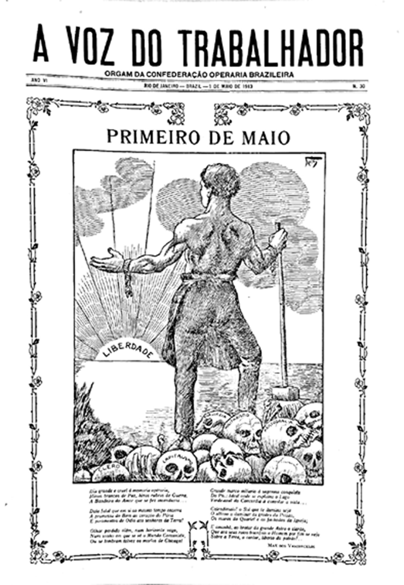A Voz do Trabalhador: Jornal da Confederação Operária Brasileira . Rio de Janeiro, 1o maio 1913. Nessa edição, o jornal trazia em sua capa um homem forte de braços abertos para um sol chamado “liberdade”, enquanto pisa sobre caveiras intituladas “clero” e “capitalismo”. As charges eram uma maneira eficiente de transmitir os ideais políticos a uma população marcada pelo analfabetismo.
A Voz do Trabalhador : Jornal da Confederação Operária Brasileira
As publicações impressas eram espaços importantes de trocas de ideias, contatos e mobilizações das reivindicações sociais de diferentes tendências políticas. Entre os muitos exemplos, estão os anarquistas O amigo do povo , que em seus três anos de existência contribuiu para dar visibilidade às pautas feministas, e A plebe , que teve longa vida, sendo publicado até o início dos anos 1950. Entre seus êxitos, A plebe chegou a manter solidariedade política com a Espanha e com outros países latino-americanos.
Entre os anos de 1904 e 1907, a carestia e a recessão econômica levaram a centenas de novas greves pelo país que mobilizaram mais de duas mil pessoas de diferentes setores, como docas, portos, transporte e indústria de alimentação.
Nesse contexto, em junho de 1917, aconteceu uma grande mobilização operária, que foi considerada a maior da Primeira República. O movimento foi iniciado por cerca de 400 operários, em sua maioria mulheres, da fábrica têxtil Cotonifício Crespi, em São Paulo, e entre as reivindicações estavam: a redução das jornadas de trabalho, o aumento salarial e o fim do assédio no ambiente profissional. As notícias sobre a mobilização alastraram-se rapidamente e empolgaram os 1,5 mil trabalhadores da indústria têxtil Ipiranga. Em semanas, os eventos se desdobraram por outras fábricas e pelo interior de São Paulo, alcançando cerca de 60 mil operários no Rio de Janeiro, em Porto Alegre e Minas Gerais, o que fez dela a primeira greve geral do país.
Como resultado, os movimentos operários conquistaram aumentos salariais da ordem de 15% a 30%. Além disso, as classes trabalhadoras consolidaram-se como agentes políticos, além de conformarem instituições, associações e partidos para a defesa de seus interesses.
Como se pode notar, a formação e o desenvolvimento da classe operária brasileira ao longo da Primeira República é um tema rico e plural. É preciso reconhecer que existiam diferentes formas de crítica social, além de tendências políticas que apostavam em variadas maneiras de transformação social.
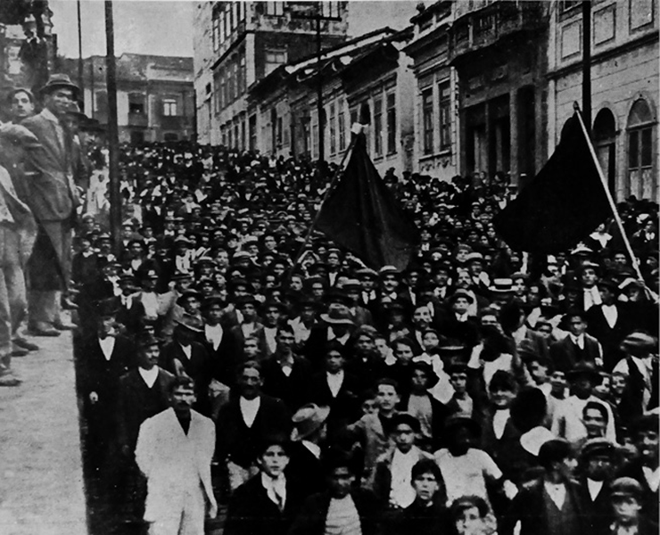São Paulo durante a Greve Geral de 1917. As ruas foram tomadas por operários e operárias em busca de melhores condições de trabalho.
Fundação Biblioteca Nacional, Rio de Janeiro
Crise da República dos governadores
À medida que os anos 1920 chegavam ao fim, uma série de fatores contribuiu para a crise da Primeira República. E as pressões dos movimentos operários foram decisivas para alargar o horizonte das reivindicações políticas e as exigências por direitos sociais.
As gradativas migrações internas, o aumento das cidades e as reivindicações por aumentos salariais e legislações trabalhistas passaram a demandar novas formas políticas e maior ampliação do espaço público brasileiro. Em paralelo a isso, os militares de baixa patente voltaram à cena, empunhando a bandeira da moralização da vida pública contra os mandos e desmandos da política dos governadores.
Do Tenentismo à Coluna Prestes
A primeira sinalização de descontentamento veio em julho de 1922, quando cerca de 300 soldados amotinaram-se no Forte de Copacabana, retomando o que restava do espírito positivista. O fim da corrupção, a defesa de eleições secretas e a industrialização do país estavam entre as principais reivindicações do movimento.
Porém, alguns estudos indicam que, na verdade, o Tenentismo, como foi chamado esse movimento, teria mesmo um caráter corporativista, isto é, seu propósito seria a derrubada da Primeira República e a implantação de um governo militar centralista que chamaria para si a condução da nação.
Dentre os 300 amotinados, 18 saíram pelas ruas cariocas para enfrentar os soldados das tropas federalistas que defendiam o Palácio do Catete na esperança de angariar apoio popular. Do conflito armado, sobreviveram dois revoltosos, Eduardo Gomes e Siqueira Campos.
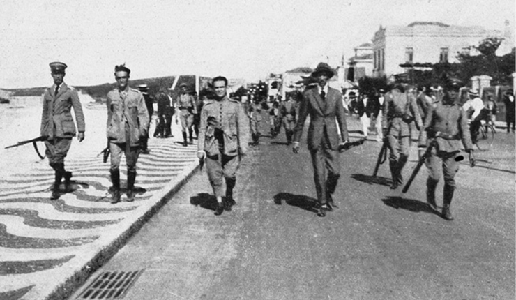Registro de autoria desconhecida, a fotografia apresenta, da esquerda para a direita, os tenentes Eduardo Gomes, Siqueira Campos, Nilo Peçanha e o civil Otávio Correia.
Arquivo Geral da Cidade do Rio de Janeiro
Apesar da derrota militar, o ideário tenentista estava plantado e, em julho de 1924, foi a vez de a cidade de São Paulo ser palco dos conflitos armados entre tenentistas e o governo de Artur Bernardes. Liderados por Isidoro Lopes e contando com a presença de Eduardo Gomes, os revoltosos mantinham suas convicções em derrubar a política dos governadores e instalar eleições secretas ao assumir o comando do país. Por duas semanas, a cidade de São Paulo sofreu bombardeios aéreos, em um típico exercício de guerra civil, o que tornava os cidadãos vítimas dos conflitos armados militares. Os eventos repercutiram pelo interior da cidade até a vitória das tropas republicanas, com a retomada do Palácio Campos Elíseos, sede do governo do estado na época.
Os tenentistas sobreviventes recuaram até a região Sul do país, onde estavam as tropas do então capitão Luís Carlos Prestes e do major Miguel Costa. Prestes e Costa, que já tinham liderado várias sublevações pelo interior gaúcho, conseguiram reunir cerca de 10 mil homens em Foz do Iguaçu e lançaram-se em marcha pelo país. Esse movimento, conhecido como Coluna Prestes , percorreu, entre abril de 1925 e fevereiro de 1927, cerca de 25 mil quilômetros, entrecortando 13 estados da União.
Decididos em seus ideais antioligárquicos, eles fundaram o jornal O libertador para divulgar seus propósitos políticos e manter comunicação nacional, além de se preocuparem em remeter correspondências às cidades que seriam visitadas para que, eventualmente, pudessem receber apoio popular na defesa de seus ideais políticos, assim definidos por Prestes e Miguel Costa em manifesto de fevereiro de 1926, no qual se colocavam contra:
[...] os impostos exorbitantes, desonestidade administrativa, falta de justiça, mentira do voto, amordaçamento da imprensa, perseguições políticas, desrespeito à autonomia dos estados, falta de legislação social, reforma da Constituição sob o estado de sítio.
ABREU, Alzira Alves de; CARNEIRO, Alan. Luis Carlos Prestes. In: Verbete do Dicionário histórico- -biográfico da Primeira República 1889-1930 . ABREU, Alzira Alves de (Coord.). Rio de Janeiro: FGV Editora, 2015.
Diante desses problemas, eles propunham, entre outras medidas, o ensino gratuito, a liberdade de pensamento e o voto secreto e obrigatório. Como se pode notar, o ideário do tenentismo tinha um apelo romântico, no sentido de idealizar a responsabilidade política de uma suposta elite técnica e administrativa – eles próprios, os militares de baixa patente – e capitanear uma espécie de refundação da vida republicana brasileira.
Ao fim de 2 anos de luta e muito desgastados, os revoltosos decidiram acabar com a Coluna. O grupo então se dividiu, parte foi com Prestes para a Bolívia, onde trabalharam com obras públicas, e o restante seguiu para a Argentina com Miguel Costa. Depois da Coluna, Luís Carlos Prestes tornou-se um importante nome na política, com fama internacional, e aderiu ao socialismo. Em 1931, Prestes foi morar na União das Repúblicas Socialistas Soviéticas (URSS), retornando ao Brasil em 1935 para encabeçar um movimento contra o regime varguista.
O fim da Primeira República
Um fator internacional agravou ainda mais as condições de governabilidade da Primeira República: a crise da Bolsa de Nova York, em outubro de 1929. Em decorrência da falta de diversificação dos setores econômicos e da superprodução industrial, as especulações financeiras no pregão de Nova York amanheceram em 24 de outubro daquele ano anunciando uma impressionante queda de 30%.
O impacto no mercado interno estadunidense foi decisivo: cerca de 15 milhões de pessoas (25% da população) ficaram desempregadas em um curto prazo. Na Europa, estima-se que a crise tenha provocado a retratação do mercado continental em 10%.
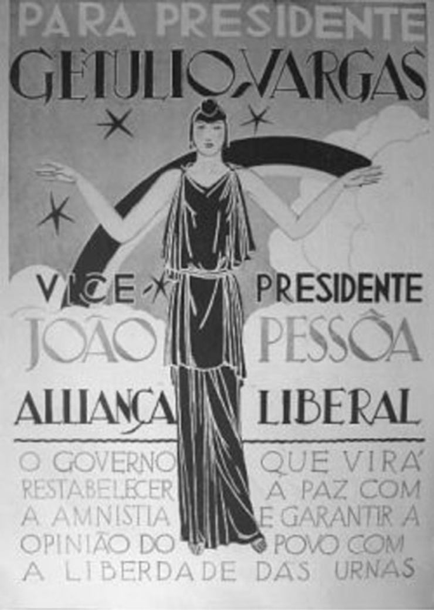O cartaz da campanha da Aliança Liberal, de 1930, associa a figura feminina a um arco-íris, elemento historicamente ligado à ideia de renovação. O programa político segue expresso nos dizeres: “ O governo que virá restabelecer a paz com a anistia e garantir a opinião do povo com a liberdade das urnas ”.
The Picture Art Collection/Alamy/Fotoarena
A partir desse momento, o Brasil viu-se sem mercado consumidor para seu café. Os estoques aumentavam, os preços caíam e, em termos políticos, as oligarquias dissidentes se organizavam em torno da chamada Aliança Liberal para oferecer uma alternativa à política dos governadores. Sentindo-se traída politicamente por São Paulo – que, em vez de indicar um mineiro para a sucessão de Washington Luís, acabou indicando o paulista Júlio Prestes –, Minas Gerais coligou-se à Paraíba e ao Rio Grande do Sul em torno da campanha do gaúcho Getúlio Vargas.
Vargas, que havia construído sua carreira política segundo a cartilha positivista do ditador Júlio de Castilhos, chegou a ser Ministro da Fazenda de Washington Luís e, em 1929, posicionava-se contra seu aliado em busca do cargo máximo do país.
Em linhas gerais, o programa político da Aliança Liberal defendia uma profunda reforma eleitoral no país com a adoção do voto secreto universal e a criação de uma Justiça Eleitoral, além de um Poder Executivo forte, capaz de aglutinar as forças políticas na condução das demandas da sociedade brasileira.
As eleições ocorridas em março de 1930 deram a vitória a Júlio Prestes, candidato do Partido Republicano Paulista, que obteve cerca de 59% dos votos, enquanto Vargas contou com cerca de 40% dos 1,8 milhão de votantes. Entretanto, o candidato vitorioso não chegou a assumir o comando do país, pois Getúlio Vargas, com o apoio dos tenentistas, tomou o poder em 3 de outubro do mesmo ano.
Assim, com o respaldo político das oligarquias dissidentes, contando com o apoio armado dos tenentistas e encampando a bandeira de reformas sociais, tais como a eleitoral e a legislação trabalhista, Getúlio Vargas pôs fim a quatro décadas que, em paralelo ao grande crescimento econômico interno, foram marcadas por autoritarismos, arbitrariedades e fraudes eleitorais. O país, então, assistiria a um novo padrão de desenvolvimento social e econômico.
Leitura de documentos
Maio de 2010. O presidente Luís Inácio Lula da Silva, em fim de mandato, celebra o lançamento em Pernambuco do petroleiro João Cândido. O navio da Petrobras é aplaudido como símbolo de orgulho nacional e recebe, a contragosto da Marinha de Guerra, o nome do marinheiro primeira-classe João Cândido Felisberto (1880--1969), líder de uma revolta de marujos ocorrida cem anos antes. O marinheiro negro João Cândido continua sendo a figura mais lembrada desse movimento, ao passo que sua história de vida revela diferentes combates memoriais, os quais envolvem a adesão de políticos e de diferentes correntes dos movimentos sociais e negros, mas também controvérsias, principalmente no que se refere à sua instituição de origem, a Marinha do Brasil.
A construção do personagem João Cândido remonta a acontecimentos da noite de 22 de novembro de 1910, quando um grupo de mais de mil marinheiros subalternos da Marinha de Guerra se rebelou na baía de Guanabara, tomando o controle dos navios mais importantes da frota da época – sobretudo os grandes encouraçados Minas Gerais, São Paulo e o scout Bahia – e apontando suas armas contra a capital federal. Os marinheiros, na maioria negros, pardos e oriundos do Norte e do Nordeste do Brasil, exigiam melhores condições e o fim dos castigos corporais, em particular, a abolição da chibata. [...]
O conjunto desses fatos ficou conhecido pela historiografia brasileira como Revolta da Chibata, título do clássico do jornalista Edmar Morel publicado em 1959. Trata-se de um caso exemplar de utilização da violência por parte do Estado para reprimir rebeldes, de uma revolta que revela contradições da jovem República brasileira, de uma tentativa de expressão dos marinheiros subalternos. Trata-se de um ‘acontecimento’ no sentido histórico do termo, capaz de marcar o tempo entre o antes e o depois, revelar mecanismos sociais aparentemente pouco visíveis e tornar-se lembrado e ‘celebrado’ posteriormente de diferentes maneiras. Sua construção como objeto histórico – bem como a recuperação de João Cândido pela memória nacional – revela a existência de várias camadas memoriais e de formas de apropriação de um acontecimento. Tanto os silêncios quanto a necessidade de falar são dimensões presentes na violência do acontecimento. [...]
O presente artigo pretende discutir em que medida a necessidade de se rememorar um acontecimento e um herói é marcada por diversas formas de esquecimento – provocadas por formas de autoritarismo, por escolhas ou cristalizações. Assim, em um primeiro momento, demonstro como a memória da Revolta da Chibata esteve presente numa série de manifestações culturais do início do século XX, revelando uma necessidade social de reviver e de compreender os acontecimentos, apesar do mal-estar que podiam ocasionar. Em seguida, analiso o conflito travado entre aqueles que desejavam comemorar a revolta e celebrar o seu maior herói – em especial, os escritores de esquerda que, como Edmar Morel, tentaram lhes atribuir um novo lugar na História do Brasil – e os que, ao contrário, esforçaram-se para que isso não acontecesse – como as autoridades policiais e navais. Finalmente, dedico-me a compreender a recuperação de João Cândido por outros atores mais contemporâneos, como os movimentos sociais e movimentos negros, e a criação de lugares de memória. Da mesma forma, sabendo-se que a memória é também uma forma de seleção, busco ouvir outras vozes contidas nos testemunhos dos descendentes de dois marujos rebeldes, os filhos de João Cândido e de Adalberto Ferreira Ribas, e no depoimento de um antigo oficial da Marinha que também se interessou pelo tema. A memória desse acontecimento participa, portanto, da sua própria história, e há muito a dizer sobre as primeiras recuperações pela cultura popular e pelos discursos mais recentes do presidente Lula.
ALMEIDA, Silvia Capanema P. de. Do marinheiro João Cândido ao Almirante Negro: conflitos memoriais na construção do herói de uma revolta centenária. Revista Brasileira de História . São Paulo, v. 31, n. 61, 2011, p. 62-4.
Com base na leitura comparada do capítulo com o artigo acima, faça o que se pede:
- Como se pode compreender a importância da nomeação de um novo petroleiro com o nome de João Cândido no ano de 2010? Explique com citações do texto.
- Como a autora justifica o fato de os eventos de 1910 serem um acontecimento histórico?
- Esclareça de que maneira a Revolta da Chibata estaria envolvida pelo que a autora chama de “formas de autoritarismo, por escolhas ou cristalizações”.
1
Leia com atenção e faça o que se pede.
Frente a este quadro de permanência de misérias e insatisfações, diversos setores da sociedade brasileira vieram a se mobilizar, trazendo à tona todo o inconformismo que então se fazia presente. Neste período, campos e cidades foram, então, tomados por inúmeras revoltas populares, demonstrando como os parâmetros jurídicos que limitavam a participação política à época não impediram, na prática, a atuação dos mais distintos grupos sociais.
MARTINS JÚNIOR, Leandro Augusto. Movimentos sociais da Primeira República . Disponível em: <http: //educacao.globo.com/historia/assunto/primeira-republica/movimentos-sociais-da-primeira-republica.html>. Acesso em: 18 ago. 2021.
- Estabeleça duas semelhanças entre os eventos de Canudos (1895-1897) e os do Contestado (1912-1916).
- Analise uma relação possível entre o avanço da classe operária e a crise da Primeira República.
2
Fuvest-SP No “Manifesto Antropófago”, lançado em São Paulo, em 1928, lê-se: “Queremos a Revolução Caraíba (...). A unificação de todas as revoltas eficazes na direção do homem (...). Sem nós, a Europa não teria sequer a sua pobre declaração dos direitos do homem.”
Essas passagens expressam a
- defesa de concepções artísticas do impressionismo.
- crítica aos princípios da Revolução Francesa.
- valorização da cultura nacional.
- adesão à ideologia socialista.
- afinidade com a cultura norte-americana.
3
UFSC 2017
Tragédia anunciada
Coronéis locais, forças estaduais e exército se uniram para combater as “cidades santas”, territórios autônomos criados por caboclos.
Cerca de 200 seguidores do monge e curandeiro José Maria estão reunidos em Irani. Todos eles homens simples, sertanejos, refugiaram-se ali na esperança de evitar um confronto com as forças do governo. Mas é tarde demais: a essa altura, o simples agrupamento – em uma região de conflitos fronteiriços e de instabilidade social – já é considerado uma atitude hostil às autoridades. Em resposta à ameaça, o governo resolve atacar: uma força de 58 soldados do Regimento de Segurança do Paraná entra em combate com os sertanejos. Morrem 21 pessoas, entre elas os chefes dos grupos em confronto – o coronel João Gualberto Gomes de Sá e o monge José Maria.
MACHADO, Paulo Pinheiro. Tragédia anunciada. Revista de História da Biblioteca Nacional , ano 7, n. 85, p. 17, out. 2012.
Sobre o movimento do Contestado, narrado no trecho acima, e os demais movimentos sociais rurais ocorridos na Primeira República (1889- 1930), é correto afirmar que:
01.
para autoridades civis e militares do governo republicano e para amplos setores da imprensa, o movimento do Contestado era uma reedição do fanatismo de Canudos que, portanto, precisava ser energicamente eliminado.
02.
diferentemente do que ocorria nas regiões Norte e Nordeste do país, o coronelismo catarinense caracterizava-se pela atuação em defesa das populações sertanejas na luta pela legitimação da posse da terra.
04.
o messianismo foi a crença que alimentou as esperanças das populações sertanejas e contribuiu para a organização de movimentos de resistência.
08.
no final do século XIX, apoiado oficialmente pela Igreja Católica, Antônio Conselheiro liderou sertanejos do interior da Bahia em um movimento pela defesa do retorno da Monarquia e pela pacificação dos conflitos no sertão nordestino.
16.
a Cabanagem e a Balaiada, movimentos ocorridos no meio rural do Norte e do Nordeste do país, buscaram articular as populações sertanejas na luta contra o coronelismo nas primeiras décadas da República brasileira.
32.
entre o final do século XIX e a década de 1930, no interior do Nordeste do Brasil, bandos de homens armados, conhecidos como cangaceiros, agiam à margem da lei e contestavam a ordem dominante dos latifundiários e dos coronéis.
Soma:
Consolidando saberes
1
Unicamp-SP 2018 Em julho de 1917, convocou-se, em São Paulo, uma greve geral, com adesão de 45.000 trabalhadores, para pedir aumento salarial. A greve se estendeu ao Rio de Janeiro e levou o governo a reforçar o aparato repressivo e decretar estado de sítio em 1918. Nos anos de 1917-1919, o Chile registrou o recrudescimento da agitação sindical. Mobilizavam-se com facilidade 100.000 trabalhadores, como durante as manifestações contra o custo dos alimentos em 1918 e 1919. A Argentina foi outro país que teve um movimento sindical poderoso. Entre 1917 e 1921, o movimento sindical conheceu seu apogeu. Apenas durante o ano de 1919, registraram-se 367 greves na capital Buenos Aires.
Olivier Dabène, América Latina no século XX. PA: EDIPUCRS, 2003, p. 64-65. (Adapt.).
Considerando o texto acima e seus conhecimentos sobre o tema, assinale a alternativa correta.
- Os movimentos grevistas foram espontâneos e apartidários nos anos de 1910, rejeitando a infiltração ideológica das lideranças sindicais, de maioria marxista e comunista, pouco mobilizadoras no período.
- Os movimentos sindicais estavam em processo de fortalecimento, entre outras razões, pela intensa ruralização dos países latino-americanos na década de 1900.
- O processo de fortalecimento dos movimentos sindicais enfrentou um forte aparato repressivo, nos anos de 1920, marcado pela colaboração entre os Estados latino-americanos.
- Os movimentos sindicais latino-americanos apresentavam, em 1917, especificidades em relação aos da Europa quanto às pautas reivindicatórias dos trabalhadores.
Leia a citação e responda às questões 2 e 3.
Contraditoriamente, foi o patrocínio da fração mais europeizada da aristocracia rural de São Paulo, aberta às influências internacionais, que permitiu o florescimento das inovações estéticas. O café pesou mais do que as indústrias. Os velhos troncos paulistas, ameaçados em face da burguesia e da imigração, se juntaram aos artistas numa grande “orgia intelectual”, conforme a definição de Mário de Andrade. Segundo ele, “foi da proteção desses salões literários [promovidos pela aristocracia rural] que se alastrou pelo Brasil o espírito destruidor do movimento modernista.”
MARQUES, Ivan. Cenas de um modernismo de província. São Paulo: Ed. 34, 2011, p. 11
2
PUC-Campinas 2016 O Modernismo de 22 caracterizou-se, de fato, por algumas contradições, entre as quais a que o texto aponta:
- Os mentores modernistas promoveram ideais estéticos para agradar burgueses e aristocratas.
- Uma economia voltada para a industrialização propiciou o desenvolvimento da produção rural.
- Membros da aristocracia paulista renunciaram a seu gosto estético em nome da arte popular.
- Membros da recém-formada burguesia impuseram seu gosto estético aos aristocratas.
- Um setor da economia rural estimulou um movimento cultural de raiz urbana e moderna.
3
PUC-Campinas 2016 Sobre o movimento a que o texto se refere é correto afirmar que, além de ter sido uma manifestação intelectual e artística,
- foi um movimento político de contestação à ordem social vigente, na medida em que rompeu com o conservadorismo elitista dominante nas artes.
- expressou a pujança do movimento operário e sua oposição à dominação oligárquica ao utilizar as novas maneiras de encarar as artes.
- foi um movimento de protesto em relação às formas de expressão primitivista, que até então predominavam nas artes plásticas e na literatura.
- reafirmou os valores artísticos do Brasil rural e patriarcal, assim como a permanência da estética naturalista e simplista da arte nacional.
- transformou-se num marco de resistência artística à política tradicional da República Velha e ao modernismo norte-americano dominante.
4
UFSC As lideranças rebeldes construíram um discurso híbrido, que envolvia expectativas milenaristas e religiosas fundidas ao descontentamento político e à rebeldia social. Um conjunto de fatores econômicos, sociais e culturais, concorreu para o desencadeamento desse tipo de revolta e para a formação de um corpo próprio do projeto rebelde (...) A intervenção do capital estrangeiro ampliou a crise social já existente no planalto. A oeste, a grilagem e a usurpação perpetradas por agentes da Brazil Railway e da Southern Brazil Lamber & Colonization que passaram a controlar praticamente todo o vale do rio do Peixe nos primeiros anos do século XX (...) Além disso, a implantação do transporte ferroviário levou à decadência o antigo comércio baseado nos caminhos de tropas, causando a depressão na região.
MACHADO, Paulo Pinheiro. Lideranças do Contestado . Campinas: Ed. Unicamp, 2004, p. 335.
Tendo em vista o trecho acima, sobre a Guerra do Contestado, ocorrida entre 1912 e 1916, é CORRETO afirmar que:
01.
o conflito só pode ser entendido pela complexa mescla de questões sociais, culturais, políticas e econômicas.
02.
se tratava de um banditismo comum que se utilizou dos símbolos religiosos para se proteger da ação da polícia, atacar os grandes proprietários de terra e arrebanhar o apoio dos caboclos.
04.
não havia nenhum problema social envolvendo a propriedade da terra, já que a região em disputa era composta de pequenas propriedades já consolidadas desde o século XIX.
08.
o capital estrangeiro trouxe um grande desenvolvimento para a região ao criar novas rotas de comércio e retirar as populações do isolamento a que estavam confinadas.
16.
foi apenas um movimento messiânico motivado por um catolicismo popular entre os caboclos que esperavam a chegada de um salvador e por isso entraram em conflito com a igreja católica.
Soma:
5
UFSC
Manifesto antropofágico
Só a antropofagia nos une. Socialmente. Econo- micamente.
Filosoficamente.
Única lei do mundo. Expressão mascaradas de todos os individualismos, de todos os coletivismos.
De todas as religiões.
De todos os tratados de paz.
Tupy or not tupy that is the question.
Revista de Antropologia
. São Paulo, n. 1, a. 1, maio 1928. Disponível em:
Sobre a Semana de Arte Moderna de 1922 e seu contexto, é CORRETO afirmar que:
01.
o evento teve consenso em sua aceitação e foi muito bem recebido pelo público, que rapidamente adotou as novas tendências artísticas apresentadas.
02.
a Semana de Arte Moderna teve impacto restrito sobre alguns poucos artistas plásticos paulistas.
04.
a Semana de Arte Moderna quase não ocorreu, pois o então presidente, Getúlio Vargas, opunha-se a qualquer manifestação cultural que não tivesse sido organizada pelo governo.
08.
o movimento antropofágico aceitava a cultura europeia desde que reelaborada e transformada em um produto nacional.
16.
os modernistas rejeitavam as tendências artísticas do século XIX, principalmente o romantismo e o parnasianismo.
Soma:
6
Mackenzie 2019 Em 1935, Luiz Carlos Prestes, líder da Aliança Nacional Libertadora (ANL), publica o manifesto abaixo.
“A todo povo do Brasil!
Aos aliancistas de todo o Brasil! 5 de julho de 1922 e 5 de julho de 1924. Troam os canhões de Copacabana. Tombam os heróis companheiros de Siqueira Campos! Levantam-se, com Joaquim Távora, os soldados de São Paulo e, durante 20 dias é a cidade operária barbaramente bombardeada pelos generais a serviço de Bernardes! Depois... a retirada. A luta heroica nos sertões do Paraná! Os levantes do Rio Grande do Sul! A marcha da coluna pelo interior de todo o país, despertando a população dos mais ínvios sertões, para a luta contra os tiranos, que vão vendendo o Brasil ao capital estrangeiro.
Quanta energia! Quanta bravura!
Mas as lutas continuam, porque a vitória ainda não foi alcançada e o lutador heroico é incapaz de ficar a meio do caminho, porque o objetivo a atingir é a libertação nacional do Brasil, a sua unificação nacional e o seu progresso e o bem-estar e a liberdade de seu povo e o lutador persistente e heroico é esse mesmo povo, que do Amazonas ao Rio Grande do Sul, que do litoral às fronteiras da Bolívia, está unificado mais pelo sofrimento, pela miséria e pela humilhação em que vegeta do que uma unidade nacional impossível nas condições semicoloniais e semifeudais de hoje! (...). Somos herdeiros das melhores tradições revolucionárias de nosso povo e é recordando a memória de nossos heróis que marchamos para a luta e para a vitória!”
www.marxists.org/portugues/prestes/1935/07/05.htm – acessado em 11/04/2019
É correto afirmar que o manifesto acima
- está inserido nas lutas políticas dos anos de 1930, herdeiras dos movimentos tenentistas, de forte tendência comunista, como a Coluna Prestes e a Intentona Comunista de 1935, que tinha como objetivo a tomada violenta do poder.
- conclama o povo brasileiro a uma revolução de caráter socialista. Para isso recorre à história do movimento tenentista, do qual Luiz Carlos Prestes foi o maior expoente, e à evidente tradição revolucionária dos tenentes brasileiros.
- exalta os movimentos tenentistas dos anos de 1920 (Revolta do Forte de Copacabana, Revolução Paulista e Coluna Prestes-Miguel Costa) buscando um passado revolucionário para os movimentos que se opunham ao Estado Novo.
- foi um chamado à população brasileira para, junto a aliancistas, derrubarem o governo de Artur Bernardes e apoiarem, tal qual o movimento tenentista, uma transformação da política brasileira, que seria liderada por Getúlio Vargas.
- retoma os 3 grandes movimentos tenentistas (Revolta dos 18 do Forte, Revolta Paulista e Coluna Prestes), identificando-os como revolucionários e predecessores de um movimento ainda maior que estaria por vir, liderado pela ANL.
No Enem é assim
As questões selecionadas nesta seção são prioritariamente do Enem, mas questões de vestibulares diversos que apresentam características semelhantes aos itens do referido exame também podem ser usadas como recurso para estudo.
1
Enem 2016 Enfermo a 14 de novembro, na segunda-feira o velho Lima voltou ao trabalho, ignorando que no entretempo caíra o regime. Sentou-se e viu que tinham tirado da parede a velha litografia representando D. Pedro de Alcântara. Como na ocasião passasse um contínuo, perguntou-lhe:
— Por que tiraram da parede o retrato de Sua Majestade?
O contínuo respondeu, num tom lentamente desdenhoso:
— Ora, cidadão, que fazia ali a figura do Pedro Banana?
— Pedro Banana! — repetiu raivoso o velho Lima.
E, sentando-se, pensou com tristeza:
— Não dou três anos para que isso seja uma República!
AZEVEDO, A. Vidas alheias . Porto Alegre: s.e., 1901 (Adapt.).
A crônica de Artur Azevedo, retratando os dias imediatos à instauração da República no Brasil, refere-se ao(à)
- ausência de participação popular no processo de queda da Monarquia.
- tensão social envolvida no processo de instauração do novo regime.
- mobilização de setores sociais na restauração do antigo regime.
- temor dos setores burocráticos com o novo regime.
- demora na consolidação do novo regime.
2
Enem 2014 Na primeira década do século XX, reformar a cidade do Rio de Janeiro passou a ser o sinal mais evidente da modernização que se desejava promover no Brasil. O ponto culminante do esforço de modernização se deu na gestão do prefeito Pereira Passos, entre 1902 e 1906. “O Rio civilizava-se” era frase célebre à época e condensava o esforço para iluminar as vielas escuras e esburacadas, controlar as epidemias, destruir os cortiços e remover as camadas populares do centro da cidade.
OLIVEIRA, L. L. Sinais de modernidade na Era Vargas: vida literária, cinema e rádio. In: FERREIRA, J.; DELGADO, L. A. (Org.). O tempo do nacional-estatismo : do início ao apogeu do Estado Novo. RJ: Civilização Brasileira, 2007.
O processo de modernização mencionado no texto trazia um paradoxo que se expressava no(a)
- substituição de vielas por amplas avenidas.
- impossibilidade de se combaterem as doenças tropicais.
- ideal de civilização acompanhado de marginalização.
- sobreposição de padrões arquitetônicos incompatíveis.
- projeto de cidade incompatível com a rugosidade do relevo.
3
Enem Para os amigos pão, para os inimigos pau; aos amigos se faz justiça, aos inimigos aplica-se a lei.
LEAL, V. N. Coronelismo, enxada e voto . São Paulo: Alfa Omega.
Esse discurso, típico do contexto histórico da República Velha e usado por chefes políticos, expressa uma realidade caracterizada
- pela força política dos burocratas do nascente Estado republicano, que utilizavam de suas prerrogativas para controlar e dominar o poder nos municípios.
- pelo controle político dos proprietários no interior do país, que buscavam, por meio dos seus currais eleitorais, enfraquecer a nascente burguesia brasileira.
- pelo mandonismo das oligarquias no interior do Brasil, que utilizavam diferentes mecanismos assistencialistas e de favorecimento para garantir o controle dos votos.
- pelo domínio político de grupos ligados às velhas instituições monárquicas e que não encontraram espaço de ascensão política na nascente república.
- pela aliança política firmada entre as oligarquias do Norte e Nordeste do Brasil, que garantiria uma alternância no poder federal de presidentes originários dessas regiões.
4
Enem O fato é que a transição do Império para a República, proclamada em 1889, constituiu a primeira grande mudança de regime político ocorrida desde a Independência. Republicanistas “puros”, como Silva Jardim, defendiam uma mudança de regime que tivesse como resultado maior participação da população na vida política nacional. Mas, vitoriosos, os republicanos conservadores, como Campos Sales, mantiveram o modelo de exclusão política e sociocultural sob nova fachada. Ao “parlamentarismo sem povo” do Segundo Reinado sucedeu uma República praticamente “sem povo”, ou seja, sem cidadania democrática.
LOPES, Adriana; MOTA, Carlos Guilherme. História do Brasil : uma interpretação. São Paulo: SENAC, 2008, p. 552. (Adapt.)
Tendo o texto acima como referência inicial e considerando o processo histórico de implantação e de consolidação da República no Brasil, é correto inferir que
- o republicano Silva Jardim lutava por um regime político essencialmente oligárquico, que foi adotado no Brasil ao longo da Primeira República (até 1930).
- o movimento republicano apresentava divisões ideológicas e defendia distintos projetos de República com a intenção de implantá-los no Brasil.
- o presidencialismo republicano assegurou a expansão da democracia brasileira ampliando o nível de participação política da sociedade na Primeira República (até 1930).
- a facilidade para a derrubada do regime monárquico explica-se pelo vigoroso apoio popular às teses republicanas e pelo desprestígio pessoal de D. Pedro II.
- a História do Brasil, em geral, se faz por mudanças bruscas e radicais, que transformam integralmente a fisionomia social e política do país.
5
Enem Completamente analfabeto, ou quase, sem assistência médica, não lendo jornais, nem revistas, nas quais se limita a ver as figuras, o trabalhador rural, a não ser em casos esporádicos, tem o patrão na conta de benfeitor. No plano político, ele luta com o “coronel” e pelo “coronel”. Aí estão os votos de cabresto, que resultam, em grande parte, da nossa organização econômica rural.
LEAL, V. N. Coronelismo, enxada e voto . São Paulo: Alfa Ômega, 1978 (Adapt.).
O coronelismo, fenômeno político da Primeira República (1889-1930), tinha como uma de suas principais características o controle do voto, o que limitava, portanto, o exercício da cidadania. Nesse período, esta prática estava vinculada a uma estrutura social
- igualitária, com um nível satisfatório de distribuição da renda.
- estagnada, com uma relativa harmonia entre as classes.
- tradicional, com a manutenção da escravidão nos engenhos como forma produtiva típica.
- ditatorial, perturbada por um constante clima de opressão mantido pelo exército e polícia.
- agrária, marcada pela concentração da terra e do poder político local e regional.
6
Enem
I. Para consolidar-se como governo, a República precisava eliminar as arestas, conciliar-se com o passado monarquista, incorporar distintas vertentes do republicanismo. Tiradentes não deveria ser visto como herói republicano radical, mas sim como herói cívico religioso, como mártir, integrador, portador da imagem do povo inteiro.
CARVALHO, J. M. C. A formação das almas : o imaginário da República no Brasil. São Paulo: Companhia das Letras, 1990.
II. Ei-lo, o gigante da praça, / O Cristo da multidão!
É Tiradentes quem passa / Deixem passar o Titão.
ALVES, C. Gonzaga ou a revolução de Minas. In: CARVALHO. J. M. C. A formação das almas : o imaginário da República no Brasil. São Paulo: Companhia das Letras, 1990.
A 1-ª República brasileira, nos seus primórdios, precisava constituir uma figura heroica capaz de congregar diferenças e sustentar simbolicamente o novo regime. Optando pela figura de Tiradentes, deixou de lado figuras como Frei Caneca ou Bento Gonçalves. A transformação do inconfidente em herói nacional evidencia que o esforço de construção de um simbolismo por parte da República estava relacionado
- ao caráter nacionalista e republicano da Inconfidência, evidenciado nas ideias e na atuação de Tiradentes.
- à identificação da Conjuração Mineira como o movimento precursor do positivismo brasileiro.
- ao fato de a proclamação da República ter sido um movimento de poucas raízes populares, que precisava de legitimação.
- à semelhança física entre Tiradentes e Jesus, que proporcionaria, a um povo católico como o brasileiro, uma fácil identificação.
- ao fato de Frei Caneca e Bento Gonçalves terem liderado movimentos separatistas no Nordeste e no Sul do país.
7
Enem Até que ponto, a partir de posturas e interesses diversos, as oligarquias paulista e mineira dominaram a cena política nacional na Primeira República? A união de ambas foi um traço fundamental, mas que não conta toda a história do período. A união foi feita com a preponderância de uma ou de outra das duas frações. Com o tempo, surgiram as discussões e um grande desacerto final.
FAUSTO, B. História do Brasil . São Paulo: Edusp, 2004 (Adapt.).
A imagem de um bem-sucedido acordo café com leite entre São Paulo e Minas, um acordo de alternância de presidência entre os dois estados, não passa de uma idealização de um processo muito mais caótico e cheio de conflitos. Profundas divergências políticas colocavam-nos em confronto por causa de diferentes graus de envolvimento no comercio exterior.
TOPIK, S. A presença do estado na economia política do Brasil de 1889 a 1930 . Rio de Janeiro: Record, 1989 (Adapt.).
Para a caracterização do processo político durante a Primeira República, utiliza-se com frequência a expressão Política do Café com Leite . No entanto, os textos apresentam a seguinte ressalva a sua utilização:
- A riqueza gerada pelo café dava à oligarquia paulista a prerrogativa de indicar os candidatos à presidência, sem necessidade de alianças.
- As divisões políticas internas de cada estado da federação invalidavam o uso do conceito de aliança entre estados para este período.
- As disputas políticas do período contradiziam a suposta estabilidade da aliança entre mineiros e paulistas.
- A centralização do poder no executivo federal impedia a formação de uma aliança duradoura entre as oligarquias.
- A diversificação da produção e a preocupação com o mercado interno unificavam os interesses das oligarquias.
8
Fuvest-SP
— Não entra a polícia! Não deixa entrar! Aguenta! Aguenta!
— Não entra! Não entra! repercutiu a multidão em coro.
E todo o cortiço ferveu que nem uma panela ao fogo.
— Aguenta! Aguenta!
Aluísio Azevedo. O cortiço , 1890, parte X.
O fragmento acima mostra a resistência dos moradores de um cortiço à entrada de policiais no local. O romance de Aluísio Azevedo
- representa as transformações urbanas do Rio de Janeiro no período posterior à abolição da escravidão e o difícil convívio entre ex-escravos, imigrantes e poder público.
- defende a monarquia recém-derrubada e demonstra a dificuldade da República brasileira de manter a tranquilidade e a harmonia social após as lutas pela consolidação do novo regime.
- denuncia a falta de policiamento na então capital brasileira e atribui os problemas sociais existentes ao desprezo da elite paulista cafeicultora em relação ao Rio de Janeiro.
- valoriza as lutas sociais que se travavam nos morros e na periferia da então capital federal e as considera um exemplo para os demais setores explorados da população brasileira.
- apresenta a imigração como a principal origem dos males sociais por que o país passava, pois os novos empregados assalariados tiraram o trabalho dos escravos e os marginalizaram.
9
UFU-MG No final do governo de Prudente de Moraes (1894-8), ficou evidente que a liberdade do Executivo, do Legislativo e dos poderes estaduais não tendia ao equilíbrio institucional, gerando conflitos de soberania e, por extensão, incerteza. Com relação a esse dilema, já antes da eleição, e através de seu Manifesto eleitoral, redigido em 1897, Campos Sales defendia a seguinte teoria: os estados são autônomos, o Parlamento é digno e fundamental, mas quem manda é o presidente. Para tal, uma vez eleito, é necessário entender-se com os chefes estaduais e controlar o congresso.
LESSA, Renato. O pacto dos estados. Revista de História da Biblioteca Nacional . Edição Número 05. Rio de Janeiro, novembro de 2005, p.39. (Adapt.)
Para o autor do texto, o pacto político proposto por Campos Sales consolidou as normas de funcionamento da República Velha, vigentes no Brasil até 1930. Por sua particular maneira de organizar a política, esta nova ordem republicana resultava
- na abolição do pacto federativo, proposta já na Constituição de 1891.
- no revezamento das diferentes regiões do país na presidência.
- no enfraquecimento das instituições representativas clássicas.
- na consolidação dos grupos oposicionistas nas instâncias governamentais.
10
UFU-MG 2015 Deodoro era o candidato mais óbvio ao papel de herói republicano. Não apenas pela indisputada chefia do movimento que derrubou a Monarquia, mas também pela sua atuação na jornada de 15 de novembro. Mas contra ele militavam fatores poderosos. A começar pelo seu incerto republicanismo e seu jeito de general da Monarquia.
Outro candidato era Benjamin Constant. Seu republicanismo era intocável. Mas o problema com ele é que não tinha a figura de herói. Não era militar nem líder popular.
CARVALHO, José Murilo. A formação das almas : o imaginário da República no Brasil. São Paulo: Companhia das Letras, 1990, p. 55-57. (Adapt.).
Os primeiros momentos do regime republicano no Brasil estiveram marcados por disputas de liderança que caracterizavam
- a persistência de uma longa tradição associada à figura do grande herói, necessária na condução dos povos.
- a força da ideologia positivista, disseminada em vários setores civis e militares.
- a penetração da ideologia republicana nas camadas populares, causando a preocupação dos militares.
- a reorganização das forças monarquistas por D. Pedro II, enfraquecendo o movimento republicano.
11
Enem Antes de tomar posse no seu cargo, ainda na Europa, Rio Branco agira no sentido de afastar o perigo imediato do Bolivian Syndicate, empresa estadunidense, e propusera a compra do território do Acre. Recusada essa ideia, propôs o Governo brasileiro a troca de territórios e ofereceu compensação, como a de favorecer, por uma estrada de ferro, o tráfego comercial pelo rio Madeira, entendendo-se diretamente com o Bolivian Syndicate.
RODRIGUES, J. H.; SEITENFUS, R. Uma História Diplomática do Brasil : 1531-1945. Rio de Janeiro: Civilização Brasileira, 1995 (Adapt.).
O texto aborda uma das questões fronteiriças enfrentadas no período em que José da Silva Paranhos Júnior, o Barão do Rio Branco, esteve à frente do Ministério das Relações Exteriores (1902-1912).
A estratégia de entendimento direto do Brasil com a empresa Bolivian Syndicate, que havia arrendado o Acre junto ao governo boliviano, explica-se pela
- proteção à população indígena.
- consolidação das guerras de conquista.
- implementação da indústria de borracha.
- negociação com seringueiros organizados.
- preocupação com intervenção imperialista.
12
Enem 2014 Ao deflagrar-se a crise mundial de 1929, a situação da economia cafeeira se apresentava como se segue. A produção, que se encontrava em altos níveis, teria que seguir crescendo, pois os produtores haviam continuado a expandir as plantações até aquele momento. Com efeito, a produção máxima seria alcançada em 1933, ou seja, no ponto mais baixo da depressão, como reflexo das grandes plantações de 1927-1928. Entretanto, era totalmente impossível obter créditos no exterior para financiar a retenção de novos estoques, pois o mercado internacional de capitais se encontrava em profunda depressão, e o crédito do governo desaparecera com a evaporação das reservas.
FURTADO, C. Formação econômica do Brasil . São Paulo: Cia. Ed Nacional, 1997 (Adapt.).
Uma resposta do Estado brasileiro à conjuntura econômica mencionada foi o(a)
- atração de empresas estrangeiras.
- reformulação do sistema fundiário.
- incremento da mão de obra imigrante.
- desenvolvimento de política industrial.
- financiamento de pequenos agricultores.
13
Famema-SP 2021
Os cadetes da Escola Militar formavam a falange sagrada. [...] Uns trapos de positivismo tinham colado naquelas inteligências e uma religiosidade especial brotara lhes no sentimento, transformando a autoridade, especialmente Floriano e vagamente a República, em artigo de fé.
(Lima Barreto. Triste fim de Policarpo Quaresma, 1959.)
O romance Triste fim de Policarpo Quaresma foi publicado em primeira edição em 1915. Interpretando-se a passagem citada à luz das instituições da Primeira República brasileira, pode-se concluir que o excerto alude
- à defesa do sufrágio universal secreto pelas forças armadas brasileiras.
- à ausência de liberdade de imprensa ao longo da República oligárquica.
- ao conteúdo filosófico predominante na primeira Constituição republicana brasileira.
- à diversidade de orientações políticas no interior dos grupos republicanos.
- às decisões políticas da presidência da República dirigidas pelo saber científico.
14
UFU-MG 2018 Por volta de 1880, os padrões de Haussmann foram universalmente aclamados como verdadeiro modelo do urbanismo moderno. Como tal, logo passou a ser reproduzido em cidades de crescimento emergente, em todas as partes do mundo, de Santiago a Saigon.
BERMAN, Marshall. Tudo que é sólido desmancha no ar: a aventura da modernidade. São Paulo: Brasiliense, 1990, p.147.
As reformas urbanas foram inspiradas no modelo parisiense a partir de fins do século XIX, influenciando, por exemplo, a intervenção urbanística do prefeito Pereira Passos no Rio de Janeiro.
Sobre tais reformas, é INCORRETO afirmar que
- as intervenções buscavam higienizar as cidades com a instalação de redes de esgoto e de água com o objetivo de prevenir epidemias.
- as ações urbanísticas modernizantes tinham por objetivo deslocar as massas incivilizadas para as periferias citadinas.
- o traçado sinuoso das antigas ruas e avenidas era mantido, visando à preservação das construções de valor histórico.
- o alargamento das ruas e das avenidas buscava ampliar a mobilizada e o controle policialesco, agilizando o deslocamento de tropas.
15
Unesp 2019 Leia o poema “Pobre alimária”, de Oswald de Andrade, publicado originalmente em 1925.
O cavalo e a carroça
Estavam atravancados no trilho
E como o motorneiro se impacientasse
Porque levava os advogados para os escritórios
Desatravancaram o veículo
E o animal disparou
Mas o lesto carroceiro
Trepou na boleia
E castigou o fugitivo atrelado
Com um grandioso chicote
Pau-Brasil, 1990.
Considerando o momento de sua produção, o poema
- celebra a persistência das tradições rurais brasileiras, que inviabilizaram o avanço do processo de industrialização de São Paulo.
- valoriza a variedade e a eficácia dos meios de transporte, que contribuíam para impulsionar a economia brasileira.
- critica a recorrência das práticas de exploração e maus-tratos aos animais nos principais centros urbanos brasileiros.
- registra uma rápida cena urbana, que expõe tensões e ambiguidades no processo de modernização da cidade de São Paulo.
- exemplifica o choque social constante entre as elites enriquecidas e a população pobre da cidade de São Paulo.